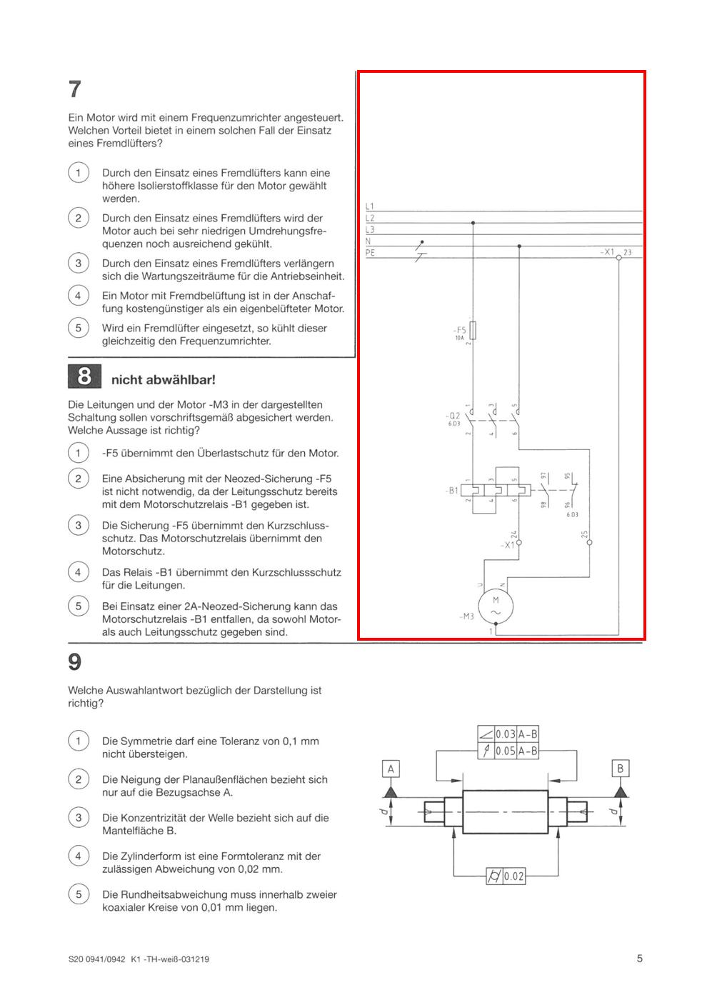

Only Sommer 2020 processed. No later season. Firebase remains not configured.
| Module | Questions | MC / U | Status |
|---|---|---|---|
| Arbeitsplanung | 36 anchors / no formal records | Not extracted | Blocked: shared Q7/Q8 draft ownership overlap |
| Funktionsanalyse | 36/36 | 28/28 · 8/8 | Production · 0 review |
| WiSo | 24/24 | 18/18 · 6/6 | Production · 0 review |
Both Q7 and Q8 refer to motor M3 in the shared right-hand diagram. The draft duplicated ownership and correctly failed the overlap gate. The existing shared-attachment representation is appropriate, but the current profile binding has already been recorded. No gate/event rollback was performed. A history-preserving profile revision is required before AP can proceed. This is a configuration/workflow blocker, not a missing source or uncertain official answer.

12 study/original exam/test source-filter checks passed; new FA 0/36, WiSo 0/24; persistent notes survive retry/reload; older-season note remains separate; mobile 390px has no overflow. No real personal browser storage was accessed.
88 new pages: AP30 + FA28 + WiSo16 + shared solution14. Old PDF rescans: 0. Duplicate run: 10 steps skipped with PDF opening prohibited. Earlier 36 source records unchanged. Existing personal models unchanged.
Reused portrait-explicit-regions and official-ring-grid engines. No detector threshold changes. All referenced FA electrical sheets and WiSo contextual/legal extracts are present. AP attachments are present but AP remains unpublished.